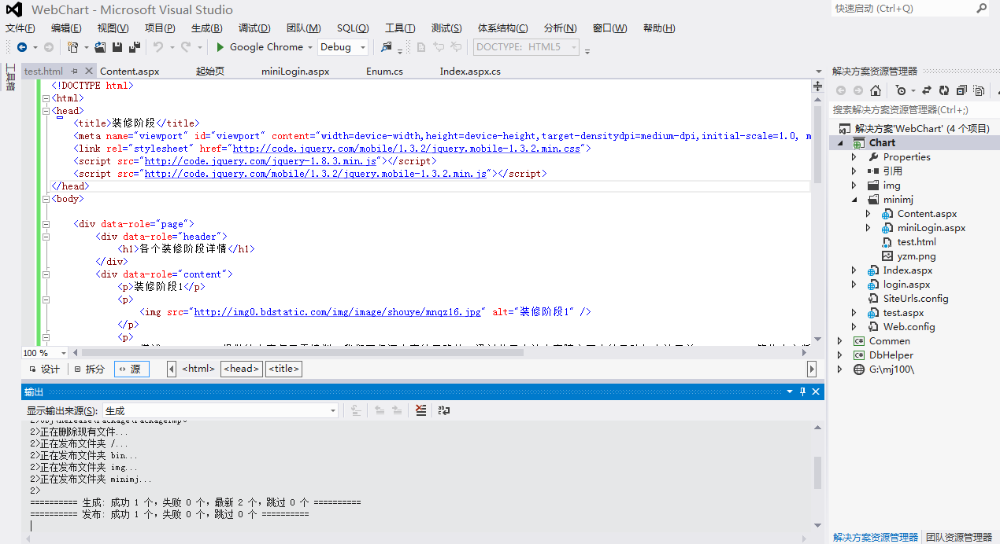

各个装修阶段详情
装修阶段1

自三峡七百里中，两岸连山，略无阙处。重岩叠嶂，隐天蔽日。自非亭午夜分，不见曦月。
至于夏水襄陵，沿溯阻绝。或王命急宣，有时朝发白帝，暮到江陵，其间千二百里，虽乘奔御风，不以疾也。(溯 同：泝)
春冬之时，则素湍绿潭，回清倒影。绝巘多生怪柏，悬泉瀑布，飞漱其间，清荣峻茂，良多趣味。
每至晴初霜旦，林寒涧肃，常有高猿长啸，属引凄异，空谷传响，哀转久绝。故渔者歌曰：“巴东三峡巫峡长，猿鸣三声泪沾裳！”
装修阶段2

古人吟唱梅花的诗中，有一首相当著名，那就是在作者之前，北宋诗人林逋的《山园小梅》。尤其是诗中“疏影横斜水清浅，暗香浮动月黄昏”两句，更被赞为咏梅的绝唱。林逋这人一辈子不做官，也不娶妻生子，一个人住在西湖畔孤山山坡上种梅养鹤，过着隐居的生活。所以他的咏梅诗，表现的不过是脱离社会现实...